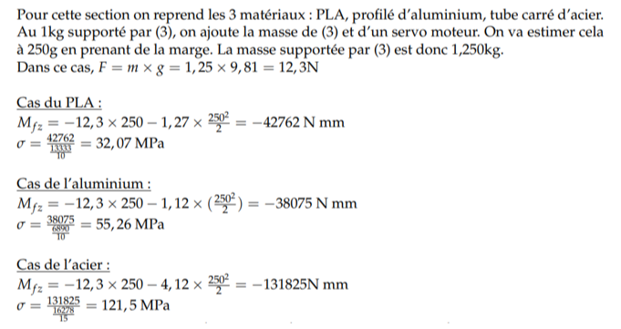

PLA (Polylactic Acid)
Pour info :
Le PLA est un thermoplastique biodégradable issu de ressources renouvelables. Bien que facile à imprimer, il présente une température de transition vitreuse basse (60°C), ce qui limite son usage en environnement chaud.
Etude du PLA :
Pour l’étude du PLA, nous allons supposer une poutre de section carrée de 20x20 mm et de remplissage à 100% pour pouvoir pouvoir négliger l’aspect fibraire de l’impression 3D et pouvoir appliquer par la suite la théorie des poutres.
Aluminium 6061-T6
Pour info :
Cet alliage durci par précipitation (Magnésium/Silicium) est le standard aéronautique. Il offre un excellent compromis résistance/poids et s'usine facilement.
Etude de l'aluminium :
Pour l’étude de l’aluminium, nous allons prendre un profilé d’aluminium tel que celui dans l'image ci-dessous.
Acier de Construction
Pour info :
Bien que très résistant et peu coûteux, sa densité de 7800 kg/m³ peu pénaliser la dynamique d'un robot (inertie pouvant être trop forte pour les moteurs).
Etude de l'acier :
Pour l’étude de l’acier, nous allons prendre un tube carré d’acier 30x30mm d’épaisseur 2mm tel que celui dans l'image ci-dessous.
Ashby Sécurité vs Écologie
Analyse :
On constate que la limite d’élasticité est largement supérieure à la contrainte pour les trois matériaux, avec une marge de sécurité plus importante pour l’aluminium et l’acier qu’avec le PLA.
Un critère important que nous devons prendre en compte est la masse du composant. Si on se réfère aux premiers calculs, on a vu que les tubes d’acier 30x30mm était plus de 3,5 fois plus lourds que les profilés d’aluminium 20x20mm. Entre l’aluminium et le PLA remplissage 100%, la masse est à peu près égale.
Concernant la fabrication des pièces, peu de modifications sont à entreprendre sur le profilé d’aluminium, seulement la découpe du profilé à la bonne longueur et un taraudage pour y fixer les servomoteurs. De même pour les tubes d’acier. Pour le PLA, il n’est pas sûr que nous puissions imprimer une barre de 25cm en une seule fois, ce qui nous obligerait à séparer chaque morceau du bras en plusieurs éléments. Cela risque de poser des problèmes de résistance ou de déformation du bras par exemple.
Concernant le PLA, il n’est pas recyclé à l’ICAM tandis que les profilés en aluminium ou acier pourraient être réutilisés les années suivantes pour de futurs projets. Toutefois, la fabrication du matériau doit également être prise en compte. Si on se réfère au graphique de Granta EduPack, le PLA et l’acier ont sensiblement le même impact en termes d’émissions de CO2 par kg tandis que la production d’aluminium rejette entre 2 et 7 fois plus de CO2. En revanche, nous avons besoin d’une masse d’aluminium au moins 3 fois plus faible que celle d’acier. ce qui réduit considérablement la différence d’impact environnemental.
Le choix que nous retenons est donc l’utilisation de profilés en aluminium d’une section de 20x20mm car il ne sont pas trop lourds, ils sont faciles à travailler et l’impact environnemental est le plus limité des 3.
Critères de Filtrage Granta EduPack
Pour la section (3) :
Pour l’élément 3, la contrainte en flexion sera donc soit 31,61 MPa. Sur Granta EduPack, on retient uniquement les matériaux dont la limite élastique est supérieure à 35 MPa pour avoir une marge de sécurité. On va également fixer une masse maximale de 200 g pour s’assurer que l’élément n’est pas trop lourd.
Étape 1 : Vue Globale
Analyse :
On constate que les matériaux naturels et la plupart des polymères sont à peine au-dessus de la limite élastique fixée. Un métal ou un composite permettrait d’avoir plus de marge. Il nous reste donc les alliages de magnésium et les composites en fibres de carbone ou de verre.
Pour avoir plus de détails sur les matériaux existants, on passe du level 2 au level 3 de Granta EduPack. On gardera uniquement les alliages de magnésium et les composites à matrice polymère pour l'étape 2.
Étape 2 : Le Duel
Analyse :
On remarque que les alliages de magnésium et les composites sont dans les mêmes zones de densité, en revanche les composites ont pour la plupart une meilleure limite d’élasticité. De plus, certains sont plus légers que les alliages de magnésium. On décidera donc de ne garder que les composites pour l'étape 3.
Étape 3 : Vainqueur Technique
Réduction du champ d'étude :
Comme la contrainte subie par la pièce est faible, on peut réduire notre champ d’étude aux composites dont la disposition d’étude est QI, même s’ils ont une moins bonne résistance que lorsque les fibres sont UD.
Étape 4 : Réalité Économique
Conclusion :
Le composite à matrice Époxy avec des fibres de verre semble être une bonne option. Il est dans la moyenne des autres composites en termes de densité, a une limite élastique largement suffisante pour notre application, et il fait partie des composites retenus les moins cher.
C’est donc notre solution idéale.
Détails des Calculs
1. Calculs littéraux

2. Section (3) (Charge 1kg)

3. Section (2) (Charge 1,25kg)
